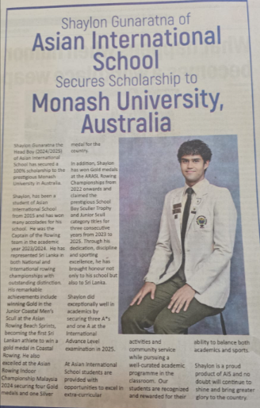

Asian International School proudly celebrates the outstanding achievement of Shaylon Gunaratna, who has been awarded a 100% scholarship to Monash University, Australia.
Shaylon has consistently excelled in both academics and sports throughout his school career. He has represented Sri Lanka in national and international rowing competitions, earning numerous accolades, including gold and silver medals at prestigious events such as the Asian Rowing Indoor Championship and the Asian Indoor Rowing Championship. He has also served as the Captain of the Rowing Team (2024–2025).
Academically, Shaylon demonstrated exceptional performance by securing *A grades in all three International Advanced Level examinations (2025)**. His dedication, discipline, and commitment have enabled him to successfully balance academic excellence with sporting achievements.
Asian International School congratulates Shaylon on this remarkable milestone and wishes him every success as he begins his higher education journey at Monash University, Australia. His accomplishment is an inspiration to fellow students and a proud moment for the entire AIS community.